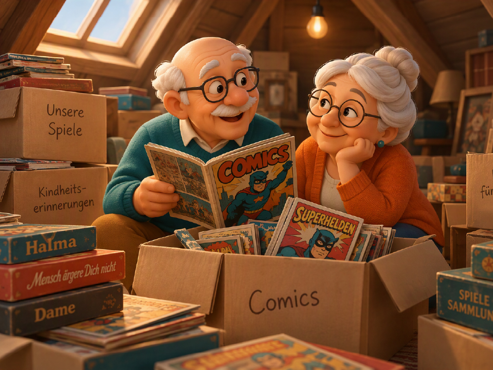
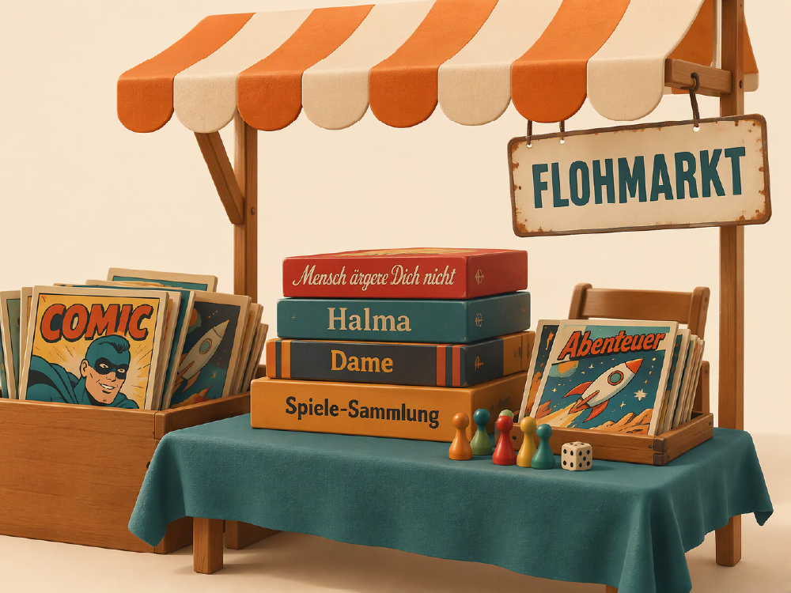

Die Geschichte hinter der Messe
Wie aus einer Comicsammlung, einem Halma-Spiel und einem viel zu kleinen Seniorentreff eine ganze Messe wurde.
Wer steckt dahinter?
Gerda und Heinz Petersen aus Hamburg-Wandsbek sind seit über 55 Jahren verheiratet – und genauso lange Sammler.
Angefangen hat alles 1958 mit einem einzigen Fix-und-Foxi-Heft. Heute füllt die Sammlung drei Regale, einen Kleiderschrank und, wie Gerda sagt, „leider auch das Gästezimmer“. Dazu kommen rund 300 Gesellschaftsspiele, viele davon mit Gebrauchsspuren aus sechs Jahrzehnten.
„Ein Heft, das nicht gelesen wird, ist ein trauriges Heft“, sagt Heinz. Deshalb wollen die beiden ihre Schätze nicht im Schrank verstecken, sondern teilen.

Wie die Idee entstanden ist
Ein Spielenachmittag platzt aus allen Nähten
Jeden Mittwoch lud Gerda in den Seniorentreff Wandsbek zum Spielen ein. Erst kamen zwölf Leute, dann dreißig, dann neunzig. Irgendwann wurde an Bügelbrettern gespielt, weil die Tische nicht mehr reichten.
Vom Flohmarkt zur Messe
Als Heinz auf dem Flohmarkt einen Stand mit alten Heften aufbaute, bildete sich eine Schlange bis zum Würstchenstand. Da war klar: Diese Freude braucht mehr Platz. Am besten gleich eine ganze Messehalle.

Die Zeitleiste
-
Der achtjährige Heinz Petersen kauft am Kiosk in Wandsbek sein erstes Fix-und-Foxi-Heft – für 50 Pfennig, die eigentlich für Brötchen gedacht waren.
-
Gerda und Heinz lernen sich beim Halma-Spiel im Jugendheim kennen. Gerda gewinnt. Heinz verlangt eine Revanche – sie dauert bis heute.
-
Hochzeit. Als Mitgift bringt Gerda zwei Kisten Mosaik-Hefte mit. Die Sammlung wächst auf über 2.000 Hefte.
-
Gerda gründet im Seniorentreff Wandsbek den Spielenachmittag „Würfel und Kekse“. Am ersten Termin kommen zwölf Leute.
-
Der Spielenachmittag platzt aus allen Nähten: 90 Gäste, zu wenige Stühle und ein Hausmeister, der um Gnade bittet.
-
Die Idee einer eigenen Messe ist geboren. Studierende der Kunstschule Wandsbek entwerfen Plakate, Website und Maskottchen.
-
Am 28. Februar öffnen sich die Türen der Messehallen Hamburg für ABENTEUER NOSTALGIE.
Unser Team
-
Gerda Petersen
Gründerin und Spielleiterin
Jahrgang 1949, ehemalige Grundschullehrerin. Erklärt jede Spielregel so, dass sie auch nach dem dritten Stück Kuchen noch sitzt.
-
Heinz Petersen
Gründer und Comic-Archivar
Jahrgang 1950, gelernter Schriftsetzer. Kennt jedes Mosaik-Heft beim Erscheinungsmonat und jeden Kiosk in Wandsbek beim Namen.
-
Ayşe Demir
Organisation und Barrierefreiheit
Leitet den Seniorentreff Wandsbek. Sorgt dafür, dass niemand lange stehen muss und jeder einen Platz am Spieltisch findet.
-
Jonas Petersen
Enkel und Technik
Studiert an der Kunstschule Wandsbek. Hat Opa beigebracht, was eine Website ist – und Oma das Wort „Claymorphism“.
Unser Motto
Man hört nicht auf zu spielen, weil man alt wird. Man wird alt, weil man aufhört zu spielen. Und wer verliert, gibt die nächste Runde Kaffee aus.